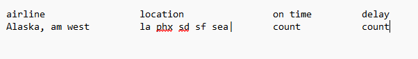

For this assignment, we are tasked with using a slightly disheveled set of airline data, cleaning it up, and analyzing it to generate some meaningful talking points. This serves as an exercise in tidying datasets as well as using self-driven analytical terms to draw conclusions, not relying too much on a strict goal but rather a means to let us create.
From looking at the CSV, my thought process for approaching this was to get everything pivoted so that the different locations were not the columns. As we will see in my code walk through I also had to use some clever de-pivoting in order to get the data to look the way I wanted it to for data analysis.
The Code
To start for this assignment, I generated my own “Flight_Data.csv” by manually inputting the values into google sheets, and saving it as a .CSV. For my own creative process, I also loosely mapped how I wanted the data to look when I was done tidying it. See below.

library(tidyverse)
Warning: package 'tidyverse' was built under R version 4.5.3
Warning: package 'ggplot2' was built under R version 4.5.3
── Attaching core tidyverse packages ──────────────────────── tidyverse 2.0.0 ──
✔ dplyr 1.2.0 ✔ readr 2.2.0
✔ forcats 1.0.1 ✔ stringr 1.6.0
✔ ggplot2 4.0.3 ✔ tibble 3.3.1
✔ lubridate 1.9.5 ✔ tidyr 1.3.2
✔ purrr 1.2.1
── Conflicts ────────────────────────────────────────── tidyverse_conflicts() ──
✖ dplyr::filter() masks stats::filter()
✖ dplyr::lag() masks stats::lag()
ℹ Use the conflicted package (<http://conflicted.r-lib.org/>) to force all conflicts to become errors
First I had to Load in my newly generated .csv file.
X X.1 Los.Angeles Phoenix San.Diego San.Francisco Seattle
1 ALASKA on time 497 221 212 503 1841
2 delayed 62 12 20 102 305
3 NA NA NA NA NA
4 AM WEST on time 694 4840 383 320 201
5 delayed 117 415 65 129 61
My goal from this point was to get the data into a longer format, and to generally clean it up. there is a missing row of data, and some inconsistent data formatting. To bypass this, I looked to drop NA’s and manually fill missing rows. Once I got that all squared away, I was good to pivot the different airport locations into rows rather than columns.
# A tibble: 20 × 4
Airline Plane_Arrival Location Count
<chr> <chr> <chr> <int>
1 ALASKA on time Los.Angeles 497
2 ALASKA on time Phoenix 221
3 ALASKA on time San.Diego 212
4 ALASKA on time San.Francisco 503
5 ALASKA on time Seattle 1841
6 ALASKA delayed Los.Angeles 62
7 ALASKA delayed Phoenix 12
8 ALASKA delayed San.Diego 20
9 ALASKA delayed San.Francisco 102
10 ALASKA delayed Seattle 305
11 AM WEST on time Los.Angeles 694
12 AM WEST on time Phoenix 4840
13 AM WEST on time San.Diego 383
14 AM WEST on time San.Francisco 320
15 AM WEST on time Seattle 201
16 AM WEST delayed Los.Angeles 117
17 AM WEST delayed Phoenix 415
18 AM WEST delayed San.Diego 65
19 AM WEST delayed San.Francisco 129
20 AM WEST delayed Seattle 61
This format of data was easy to then manipulate into an analysis of the total on time and delayed ratios, which I then characterized as “Percent Reliability”. I figured it’s best to look at the sum before breaking it down into smaller parts for this analysis. I used some grouping and summarizing, followed by a mutated column to get my new reliability value.
# A tibble: 2 × 5
Airline On_Time_Count Delayed_Count Total_Flights Percent_Reliability
<chr> <int> <int> <int> <dbl>
1 ALASKA 3274 501 3775 87
2 AM WEST 6438 787 7225 89
As you can see here, the airlines compare pretty well in terms of reliabilty. “AM WEST” is slightly more reliable, simply based on frequency of flights compared to “ALASKA”.
I wanted to dig a little deeper to get into the different reliabilities based on airport as well. I still broke out the airlines so that we can have a more rigorous analysis. Similar to my point above, the danger of our outputs here is that the data we get could be smaller sample sizes, which could then skew the reliability data.
To get this data in the right format, I had to take the previous pivoting function and manipulate it one step further to again widen it. My original approach was to try a transpose t() function, but I found through some errors and internet searching that this isn’t the ideal approach. Claude suggested using pivot_wider() and I did so, which helped tremendously. I was able to continue the manipulation within this same pipeline and get to a final summarized look at flight reliability per location and airline.
As I was discussing earlier, the difficult piece with this data is that you can’t take it for face value without accounting for the volume of flights as well. as you can see, for Phoenix, we could say the airline companies are fairly similar in reliability, but Alaska has almost 5000 less flights under its belt.
To account for this, my final presentation of the data will include a rough “confidence interval” calculated using the largest number of flights of a single carrier, which for this is 5255.
# A tibble: 2 × 2
Airline Percent_Reliability
<chr> <dbl>
1 ALASKA 87
2 AM WEST 89
Conclusion
As you can see from the 2 final tables above, the conclusions of this analysis are both simple and complex. If you look at the overall summaries, you can see that Alaska and Am West have similar percent reliabilities. When you dive in deeper, you see that sample size plays a big role in verifying these reliabilities. The largest sample of flights comes from Am West in Phoenix, and the next biggest sample is just under half of that. It is fascinating to see that one of the highest values of confidence is also one of the most reliable.
The big takeaway from this is that you can then use these values to make judgement calls on how reliable your flight will be, if that then affects your travel decision making or business planning. However, the fine print of using this data comes in the form of that confidence interval, so as long as you are comfortable with the reliability given the sample size of data than go for it! And all things considered, the odds are generally in your favor to be departing on time.